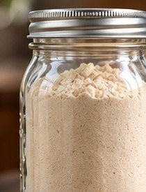

Chapter 1 · Recipe 11
Cheesy Scalloped Potato Mix
Scalloped potatoes are worth making, but measuring out a cheese sauce from scratch isn’t always ideal on a weeknight. This jar keeps the dry sauce ingredients together, so you can add the potatoes and milk when you’re ready.
What’s in the Jar?
- ½ cup powdered cheddar cheese
- ¼ cup dry milk powder
- 2 tablespoons cornstarch
- 1 tablespoon dried minced onion
- 1 teaspoon garlic powder
- 1 teaspoon kosher salt
- ½ teaspoon black pepper
- ½ teaspoon paprika
What to Add
- Thinly sliced potatoes
- Milk
- Butter

Real author photo (generic jar) — final: recipe-matched photography pending
Instructions
- Combine the powdered cheddar, milk powder, cornstarch, dried onion, garlic powder, salt, pepper, and paprika.
- Whisk well to break up any lumps.
- Transfer the dry sauce mix to an airtight jar.
- Seal and label.
- Use about 2 tablespoons of the dry mix for each ¼ pound of sliced potatoes. Add milk and butter when preparing.
Nutrition (per serving)
Calories: 50 kcal, Protein: 3g, Carbs: 6g, Fat: 1g
Storage
Place the jar tightly sealed in a cool, dry pantry. Store it for up to 6 months.